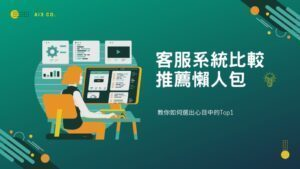

市面上琳瑯滿目的客服系統，要怎麼挑到符合自身企業需求的客戶服務管理流程，又可以符合現在市場需求使用？我們整理出9間雲端客服系統的價格、功能比較表，方便大家可以快速理解及過濾。
一、客服系統是什麼？
主要是一套軟體系統協助企業進行客戶服務流程管理，從進線服務到服務追蹤管理，將一整套的客戶服務流程納入此套系統進行管理。
- 什麼是進線服務？如撥打電話諮詢、官網在線文字客服諮詢、LINE@、FB、IG等社群媒體即時通。
- 什麼是服務追蹤管理？即為售中、後服務，如訂單管理、申報故障維修、申請例行維護等動作。
二、客服系統可以解決什麼問題？帶來什麼效益？
跟Ai3人工智能股份有限公司諮詢客服系統的企業客戶常常遇到以下幾個問題，讓他們非常困擾，甚至嚴重影響到企業營運：
- 在產業旺季的時候，電話響個不停，所有員工都要去支援，接到手軟還是接不完。
- 服務人員每天文字訊息(FB、LINE、官網留言)量都超過100則，又不能分工處理，訊息都回不完。
- 業助或服務人員常常訊息回到一半，電話響了就忘記回覆訊息了。
- 疫情影響銷量下降，但又沒有消費者可以行銷的破口，想做行銷活動但又不知從哪裡開始下手。
- 老闆發現常常有消費者客訴，但又不知如何管理客戶服務。
- 有消費者去消保會申告，提供產品使用後影響健康…等之類的問題，但我又沒辦法佐證我是被誣陷的。
每個企業客戶重視及遇到的問題都不同，我們都可以因應不同客戶提供各種解決方案，去解決大家的疑難雜症並且將企業及消費者效益最大化，那帶來提升哪些效益呢？
- 企業品牌形象提升
- 商機及業績成長
- 顧客體驗滿意度提升（降低企業與消費者的溝通成本）
- 員工工作效率提升（降低不必要的人力成本）
三、雲端客服系統方案比較推薦
在傳統的世界裡，大家印象中找企業或政府客戶服務單位都會去哪裡找？不外乎就是臨櫃和客服電話專線，新世代的年輕人大多數已經習慣了文字訊息的溝通，因應這樣的消費行為改變，市面上出現了許多可以在官網、FB、Line、IG等網路平台架設線上即時客服或客服即時通的入口，提供給消費者或民眾一個可以用來與企業或政府溝通的管道。我們依企業會使用到的功能面區分雲端客服系統方案推薦依照不同需求可使用不同功能的產品：
1.簡易型客戶訊息回覆方案
市面上許多簡易型客戶訊息回覆方案是可以提供企業免費試用，一般使用介面皆會是一頁式的電話及文字訊息回覆，僅提供做為在線時的即時回覆，無法留言或是查詢以往客戶訊息。
2.專業客服中心方案
此方案會比上述方案1. 多了三種功能需求，一為可以在客服中心專屬的知識庫搜尋，盡量讓服務人員可以第一時間進行問題回覆；二為會將由不同管道，如電話、FB、Line、IG、WeChat等平台進行溝通的訊息轉傳至同一平台進行回覆，並且也會將相關客戶資訊歸納到客服CRM裡面進行紀錄，方便後續企業進行分析提供給下一波的行銷優惠活動作參考；三為可以在此次服務中建立工單進行後送追蹤管理，方便企業進行待辦事項追蹤管理。
3.一次到位的客戶服務流程管理方案
此方案為企業對於客戶服務非常注重，希望可以在同一單位內進行所有客戶服務流程的管理，一般這個單位會統一在客服中心，因為客服中心是企業面對消費者的第一線接觸人員，所有消費者的第一線資訊都會在這個單位接收，從客戶服務到後勤單位，如業務、倉儲、技術維修、財務等相關客戶服務的流程管理，這個方案相對於一般上面上簡單的系統來說，複雜度較高且資訊工程較困難。